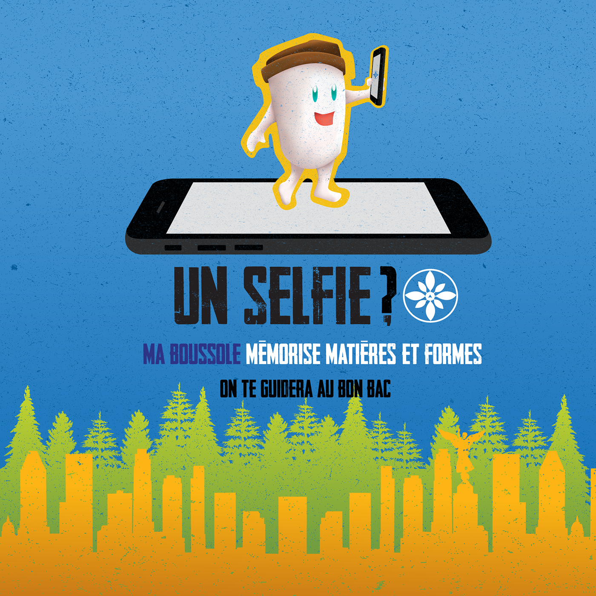
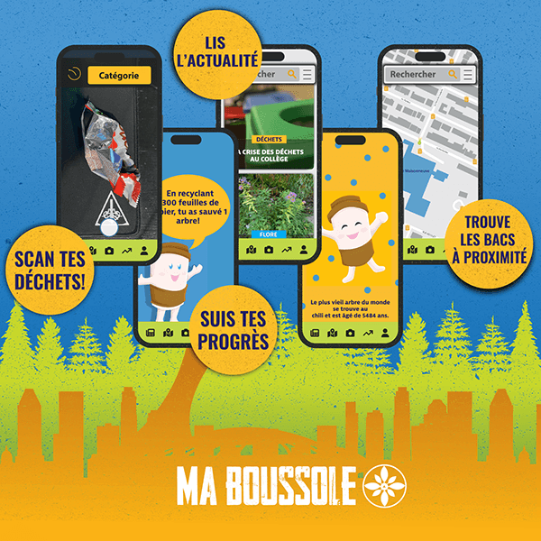
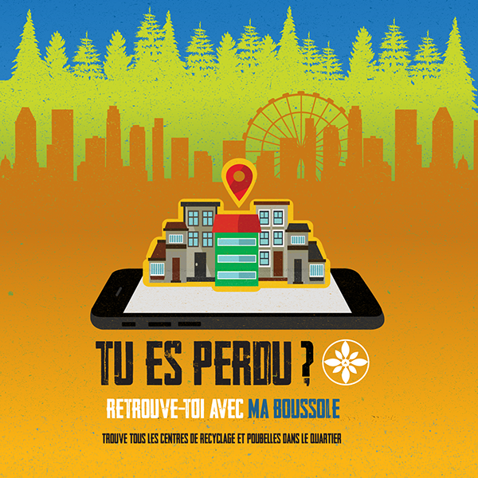
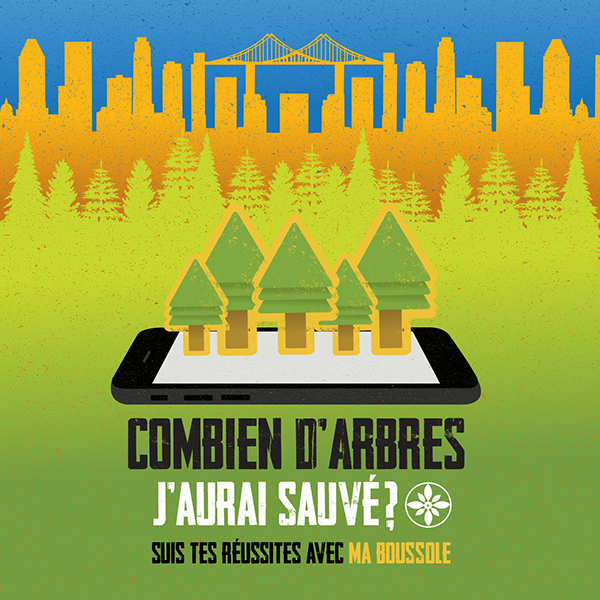
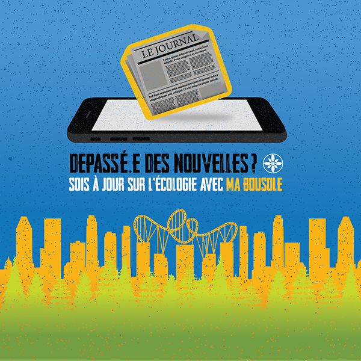
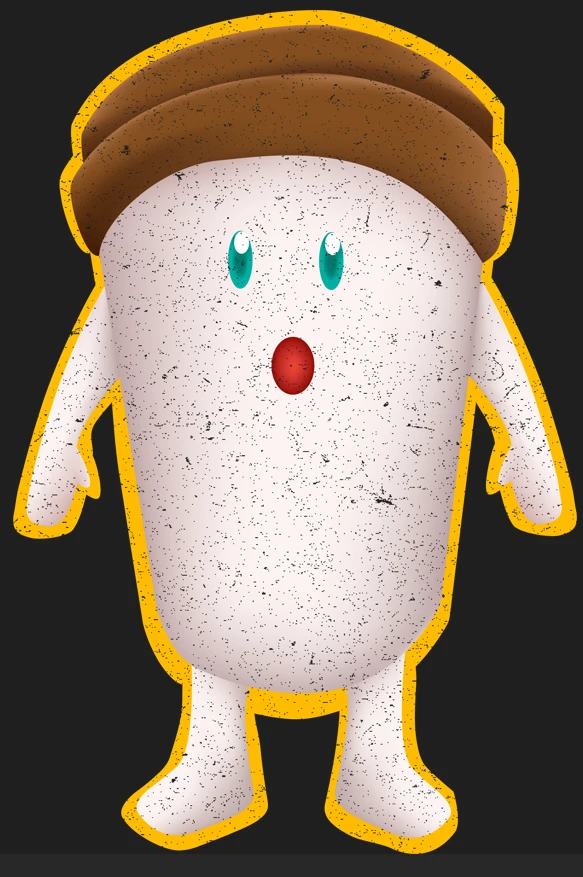

Featured Project — Motion & Visual Execution
An Earth Day campaign for an app that doesn't exist yet.
Ma Boussole ("My Compass") is a concept app that guides people to sort their waste correctly — promoted here through a poster campaign, UI mockups, a brand mascot, and two motion pieces.

Context
A recognizable problem: nobody's sure which bin is right.
This project was built as an Earth Day awareness piece — a series of posters designed to promote a concept mobile app, Ma Boussole, and highlight recycling and environmental responsibility more broadly.
The premise is straightforward and genuinely useful: Ma Boussole is pitched as an app that uses detection technology to identify what you're holding — its material and shape — and tells you, without ambiguity, how to dispose of it responsibly.
My Role
A three-person team project.
Ma Boussole is credited on the work itself to three people: Anastasia Poissant Ross, Éric Nguyen, and Alejandro Yanez del Rio. It was produced as part of the Techniques d'intégration multimédia program at Collège de Maisonneuve.
In the interest of accuracy, I'm presenting this as a team output rather than claiming every individual asset as my own — the credit line doesn't break down who did what, so neither do I here.
I co-created the campaign concept, the visual system, and the deliverables shown below, as one of the three credited creators.

The App Concept
Four features, one habit to build.
- Scan your waste — point the camera at an item and the app identifies it by material and shape, then tells you which bin it belongs in.
- Find nearby bins — a map of recycling centers and bins in the surrounding neighborhood.
- Track your progress — small, concrete feedback (e.g. how many trees a given amount of recycled paper saves) instead of an abstract "you did good" message.
- Read the news — a feed of ecology-related stories, keeping the app relevant between sorting sessions.
Campaign
One question per poster, one feature as the answer.
Each poster in the series opens with a question a real person might actually think ("Am I lost?", "How many trees have I saved?"), then answers it with a specific app feature — rather than a generic sustainability slogan. The posters are in French, matching the campaign's Montreal audience.




The Character
A mascot instead of a logo.
Rather than lead with a compass icon alone (used here as a small badge/app-icon mark), the campaign leads with a friendly character — approachable enough to make an environmental-responsibility message feel encouraging rather than guilt-driven.
Video & Motion